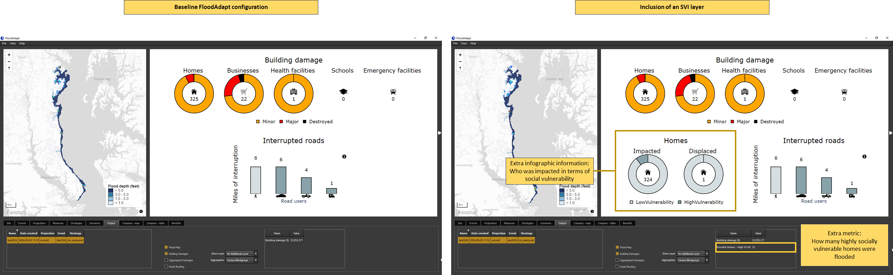

Database-Builder
The FloodAdapt database-builder is intended to greatly simplify the process of setting up FloodAdapt in a new location. The FloodAdapt software is an ‘empty shell’ that must be connected to a site-specific database. The database-builder aids the user in setting up this database.
The most critical components of the FloodAdapt database are the SFINCS and Delft-FIAT models, both of which can now be generated with greater ease using the SFINCS model-builder and the Delft-FIAT model-builder. Once these have been created, users can run the FloodAdapt database-builder to generate a complete database for a functioning FloodAdapt application at their site.
To run the database-builder, a user double-clicks the FloodAdapt database-builder executable. This opens a screen where the user can enter a file path to the database-builder configuration file.
This documentation will describe the FloodAdapt database-builder configuration file. Depending on the amount of information included in the configuration file, different FloodAdapt functionalities will be activated. This is described in the section FloodAdapt capabilities based on configuration. It starts by outlining the minimum information required to generate a functional FloodAdapt system, and then specifies additional functionalities and the required information in the configuration file to activate them. The section Configuration file attributes specifies all of the attributes that can be included in the database-builder configuration and includes details about their format and use.
FloodAdapt capabilities based on configuration
There are different functionalities that are activated in FloodAdapt depending on the information contained in the configuration file. This section starts by describing the information needed for the baseline FloodAdapt configuration, which is the minimum needed to set up a functional FloodAdapt system. Note that an important requirement is that a Delft-FIAT model and an overland SFINCS model have been set up for the site. The subsequent sections then describe additional FloodAdapt functionality that is activated with additional configuration input.
Baseline FloodAdapt configuration
A baseline FloodAdapt configuration is a functional version of FloodAdapt that requires the minimum amount of configuration file input. This version allows users to run event scenarios for either a synthetic event or a historical gauged event. All measures and future projections are available for analysis. Note that because it only supports event scenarios, the risk and benefits options are not available for this baseline configuration.
A baseline FloodAdapt configuration allows users to get started with FloodAdapt with relatively little required information. The following is all that is required for a baseline configuration:
- A name for your site
- The path to your overland SFINCS model folder
- The path to your Delft-FIAT model folder
- The unit system you want to work in (imperial or metric)
- Max values for output maps displayed in the FloodAdapt user interface
The name of your site, paths to your SFINCS and Delft-FIAT models, and the unit system are all specified in the header section of the configuration file which is described under ‘Configuration file attributes’ in the Header attributes section. The max values for output maps are specified in the GUI attributes section.
Risk and benefit analysis
The baseline FloodAdapt configuration allows users to simulate event scenarios, which can be very insightful. However, risk scenarios allow users to understand the current and future risk to a community (considering many types of events), with and without adaptation options, and to calculate the risk-reduction benefits of adaptation strategies. To activate the risk scenario and benefit analysis functionality, a probabilistic event set is required. When this set is included in the FloodAdapt database, FloodAdapt can calculate the flooding for all the events in the set and uses a probabilistic calculator to calculate return period flooding, impacts, and risk.
Specifying a probabilistic event set is done in the Header section of the configuration file. See the attributes in the Header section under ‘Configuration file attributes’ in the Header attributes section.
Simulating hurricane events and ‘ungauged’ historical events
For FloodAdapt users to simulate a scenario with a historical hurricane, or to simulate a historical event for which there are no measured nearshore water levels, an offshore SFINCS model needs to be included in the FloodAdapt database (this can be created with the SFINCS model-builder). Once an offshore model is included, users will see additional event types that can be selected when they click “Add Event” in the FloodAdapt Events tab (see Figure 1). If a specific cyclone basin is specified in the database configuration file, only hurricanes in the specified basin will be included in the database and displayed in the hurricane selector window (which appears when the ‘Historical - hurricane’ option is chosen); see Figure 2. Note that if hurricanes are not relevant in an area, but an offshore model is included to simulate ungauged historical events, the hurricane event option can be “turned off” in the database configuration file.
{kind=link}
{kind=link}
Specifying an offshore SFINCS model and a cyclone basin is done in the Header section of the configuration file. See the attributes in the Header section under ‘Configuration file attributes’ in the Header attributes section.
Downloading historical water levels
FloodAdapt allows users to simulate historical events. In the baseline FloodAdapt configuration, FloodAdapt users need to import their own water level time series for historical events. When a tide gauge (or alternatively a long time series CSV file) is added to the FloodAdapt database, this activates a ‘Download Observed Water Levels’ button in the specification window for a historical event. FloodAdapt users can then easily download water levels for a historical event by selecting a start and end date and clicking that button. Figure 3 shows the baseline FloodAdapt configuration on the left and with the inclusion of a tide gauge on the right. For sites in the U.S. tide gauges can be added automatically based on the site location via the NOAA COOPS website. The NOAA site also includes datum differences at gauge locations, so that users have the option to view water levels relative to a (potentially) more familiar datum (see Figure 3).
{kind=link}
Details how to include a tide gauge (or long water level time series) to activate the ‘Download Observed Water Levels’ button are described under ‘Configuration file attributes’ in the Tide Gauge section.
Visualizing water level output time series
FloodAdapt allows users to view modeled water level time series at observation points in the FloodAdapt Output tab. The spatial flood map in the FloodAdapt Output tab is static and represents the maximum flood depth during an event. Having observation points helps users understand how the water levels evolved during an event. To activate this functionality, observation points can be added to the database-builder configuration file.
{kind=link}
The attributes needed to include observation points are described under ‘Configuration file attributes’ in the Observation Points section.
Elevating buildings above base flood elevation (BFE)
FloodAdapt allows users to explore home elevations as an adaptation measure. With the base configuration, FloodAdapt users can specify how high a home should be elevated relative to a datum. However, in the U.S. standards for home elevations or elevations of new buildings are often specified relative to base flood elevation (BFE). This is a regulatory 100-year flood level calculated by the federal government. When users reference a base flood elevation layer in the configuration file, FloodAdapt users can choose to elevate homes above a datum or to a height above BFE.
The attributes needed to include a BFE layer are described under ‘Configuration file attributes’ in the Base Flood Elevation section.
{kind=link}
Sea level rise scenario selection
FloodAdapt allows users to explore the flooding and impacts for future sea level rise projections. In the base configuration case, users have access to this functionality, and can enter a sea level rise explicitly, for example “0.5 feet”. However, FloodAdapt users may want to explore flooding and impacts at a specific point in the future, for example in 15 or 20 years, and they may not know the sea level rise to expect in that future year. To facilitate these users, a sea level rise scenario CSV file can be included in the database setup. There are many sources for sea level rise scenarios, such as the interagency sea level task force. There is no limit to the number of SLR scenarios a user can include. FloodAdapt uses this file to generate a visualization showing the different SLR scenario curves in the Projections selection window. It also allows a user to enter a future year and select a SLR scenario, and then automatically calculates the sea level rise for that year.
The attributes needed to specify SLR scenarios are described under ‘Configuration file attributes’ in the Sea Level Rise Scenarois section.
{kind=link}
Sea level rise scenarios are updating every few years. Updating the sea level rise scenarios in FloodAdapt is a simple as updating the CSV file with the years and projected sea level rise. FloodAdapt will then automatically use the new information when a FloodAdapt user selects a future year and a sea level rise scenario.
Configuration file attributes
Header attributes
Figure 8 shows the mandatory attributes that are given at the top of the configuration file. These are required for all configurations, including the baseline configuration. These will be described below.
{kind=link}
Mandatory attributes are:
- name - this is the name of the database folder for your site
- database_path - this is the path where your database folder will be saved
- sfincs - this is the location of your SFINCS overland model
- fiat - this is the location of your Delft-FIAT model
- unit system - this is either “imperial” or “metric”
Figure 9 shows the optional attributes that are given at the top of the configuration file. These will be described below.
{kind=link}
Optional attributes are:
- sfincs_offshore - this is the location of your SFINCS offshore model.
- cyclone_basin - this is the region code (given with quotation marks around it, see Figure 9) where your site is located, for filtering the tropical cyclones (hurricanes) that show up in the hurricane selection window in FloodAdapt. Region codes are described below this list.
- probabilistic_set - this is the path to the prepared event set and event frequencies which enable risk analysis
- cyclones - this is by default “True”, but if set to “False” hurricanes will not show up as an option when a user selects “Add Event” in FloodAdapt
For the cyclone_basin the region code options are:
- NA = North Atlantic
- SA = South Atlantic
- EP = Eastern North Pacific (which includes the Central Pacific region)
- WP = Western North Pacific
- SP = South Pacific
- SI = South Indian
- NI = North Indian
GUI attributes
{kind=link}
Figure 10 shows the attributes that are required for the GUI. These are mandatory attributes that must be included in all configuration files, including the base configuration file.
The GUI attributes all have to do with maximum values. These are used to create automatic bins for the spatial mapping of flooding, impacts, and benefits.
Start the GUI attribute section with [gui]. The values that need to be specified are:
- max_flood_depth - this will be the highest legend value in the output flood maps (above which all values get the same color).
- max_aggr_dmg - this will be the highest legend value in the output aggregated damages maps (above which all values get the same color). A good choice for this value will depend on the size of your aggregation, the density of the building footprints, and the currency value in the application area. It can be difficult to know apriori what to pick here, but the value can always be changed later in the FloodAdapt database static/site.toml file under the [gui.mapbox_layers] section.
- max_footprint_dmg - this will be the highest legend value in the output building damages maps (above which all values get the same color), and can be estimated based on the maximum potential values of the buildings in the site area.
- max_benefits - this is the maximum value for the spatial benefits. This can also be difficult to estimate apriori, but can be changed later in the FloodAdapt database static/site.toml file under the [gui.mapbox_layers] section.
Building footprints
The attributes for building footprints are shown in Figure 11. A building footprint layer allows users to visualize the building footprint damages in the output maps (instead of only points). Note that if a building footprint file is not included, the database-builder will automatically add Open Street Map building footprints to support the visualization of building damages in the FloodAdapt application.
{kind=link}
For building footprints, start the section with [building_footprints] and provide the following attributes:
- file - this is the path to the building footprint file (this should be a vector file, like a shapefile or a geopackage), making sure to use forward slahses in the paths.
- field_name - this should be a unique identifier attribute in the vector file, like an Object ID.
Tide Gauge
The attributes needed to include a tide gauge are shown in Figure 12. The inclusion of a tide gauge allows FloodAdapt users to automatically download water levels for a specified start and end time.
{kind=link}
For a tide gauge, start the section with [tide_gauge] and provide the following attributes:
- source - this is either “noaa_coops” if you want to use the closest NOAA gauge station from https://tidesandcurrents.noaa.gov/stations.html (only available in the U.S.) OR “file” if you will be providing gauge data (water level time series) in a CSV file.
- file - this is only required if the source is equal to “file”. It should be the path to a CSV file containing the gauged water level time series. The CSV file should have two columns; the first contains a ‘datetime’ in the format DD/MM/YYYY HH:MM and the second column contains the water levels relative to mean sea level.
- ref - this is an optional attribute; if provided, it will be used as the ‘zero’ when plotting event water levels in the event specification window of FloodAdapt.
- [tide_gauge.max_distance] - this is a section to specify the maximum radius around the site to search for a tidal gauge station. This prevents tide gauges being applied to a site that are too far away to be representative. The attributes that fall under this are value which gives a numeric value for the distance, and units which specifies the unit of the value (e.g. “miles”). See Figure 12 for an example.
Social vulnerability index (SVI)
The attributes needed to include an SVI layer are shown in Figure 13. The inclusion of an SVI layer allows FloodAdapt users to get additional information in the infographic related to who is being impacted, and to view the layer in the FloodAdapt Measures and Output tabs.
{kind=link}
For an SVI layer, start the section with [svi] and provide the following attributes:
- file - this is the path to the geospatial file with the SVI layer
- field_name - this is the name of the attribute in the geospatial file that contains the social vulnerability index.
- threshold - this is the value of the SVI above which homes will be considered to have a high social vulnerability.
Base flood elevation (BFE)
The attributes needed to include a BFE layer are shown in Figure 14. The inclusion of a BFE layer allows FloodAdapt users to elevate buildings relative to this layer, in addition to being able to elevate relative to datum.
{kind=link}
For a BFE layer, start the section with [bfe] and provide the following attributes:
- file - this is the path to the geospatial file with the BFE layer
- field_name - this is the name of the attribute in the geospatial file that contains the base flood elevation.
Sea level rise (SLR) scenarios
The attributes needed to include SLR scenarios are shown in Figure 15. The inclusion of a SLR scenarios file allows FloodAdapt users to enter a future sea level rise projection by selecting a SLR scenario and a year in the Projections window of FloodAdapt.
{kind=link}
For SLR scenarios, start the section with [slr.scenarios] and provide the following attributes:
- file - this is the path to the CSV file that contains the SLR scenario information. Figure 16 shows an example of the CSV file format. The first column should contain the year, the second column the units, and each additional column should contain the projections at the specified years in column 1. Each SLR scenario column should contain a header with the name of the SLR scenario. These are the names that will show up in the Projections window.
- relative_to_year - this is the year you want the SLR projections relative to. Often SLR scenarios are relative to an older date, for example the year 2000. If you want to know how a recent event would look with SLR, you will want to know the SLR relative to a more recent year. The relative_to_year does not need to be exactly the current year, but should be within a few years of events of interest. When a user selects a SLR scenario and a year, FloodAdapt will then automatically calculate the SLR relative to the date selected here.
{kind=link}
Observation points
The attributes needed to include observation points are shown in Figure 17. The inclusion of observation points allows FloodAdapt users to visualize a time series of water levels at these points throughout a simulated event (rather than only a maximum flood depth as is shown in the spatial maps).
{kind=link}
Users can enter multiple observation points. These are treated as a list, which means that each observation point gets its own section with the same name (obs_point), enclosed in a double square bracket.
For observation points, start the section with [[obs_point]] (one for each observation point) and provide the following attributes:
- name - this is the name of your observation point. This name cannot contain spaces or special characters.
- description - this a descriptive name of your observation point. This will show up at the top of the time series plot in the FloodAdapt Output tab.
- lat - this is the latitude of your observation point.
- lon - this is the longitude of your observation point.
Social vulnerability insights
FloodAdapt automatically generates an infographic and a metrics table which helps FloodAdapt users understand the impacts of a simulated scenario. Social vulnerability is based on a collection of socio-economic attributes that indicate a longer or harder recovery from a flood event. When a social vulnerability index (SVI) layer is included in the FloodAdapt database, FloodAdapt shows additional information in the infographic and metrics table related to how socially vulnerable people are affected in a simulated scenario. Users can also view the SVI layer in both the Measures and Output tabs, helping to identify where to explore measures and understand the impacts to socially vulnerable people. Figure 4 highlights the added information in the infographic and metrics table. It shows the baseline configuration on the left, and the configuration with an SVI layer added on the right. With the SVI layer included, users can see in the infographic the proportion of highly-vulnerable residential buildings that were damaged and destroyed. In the metrics table, they can see how many highly vulnerable residential properties were flooded.

The attributes needed to include an SVI layer are described under ‘Configuration file attributes’ in the Social vulnerability index section.